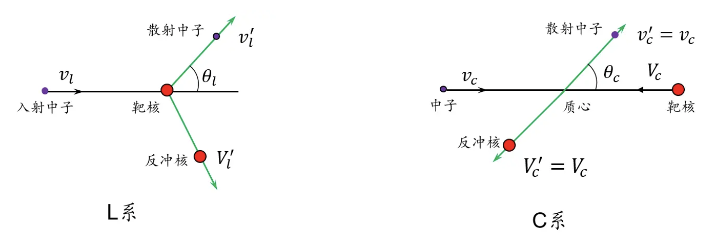
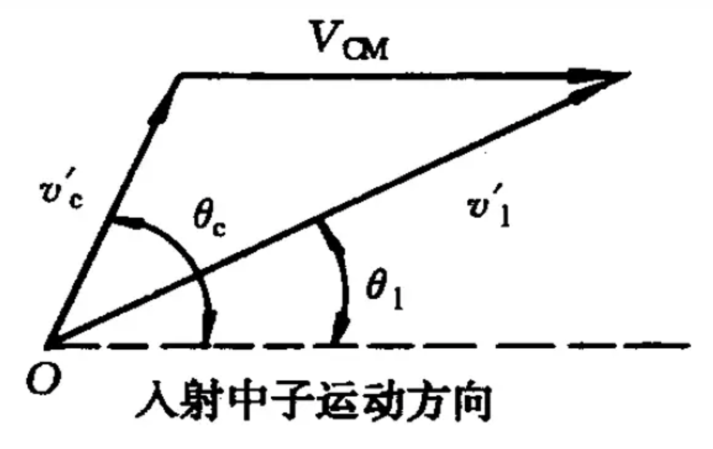
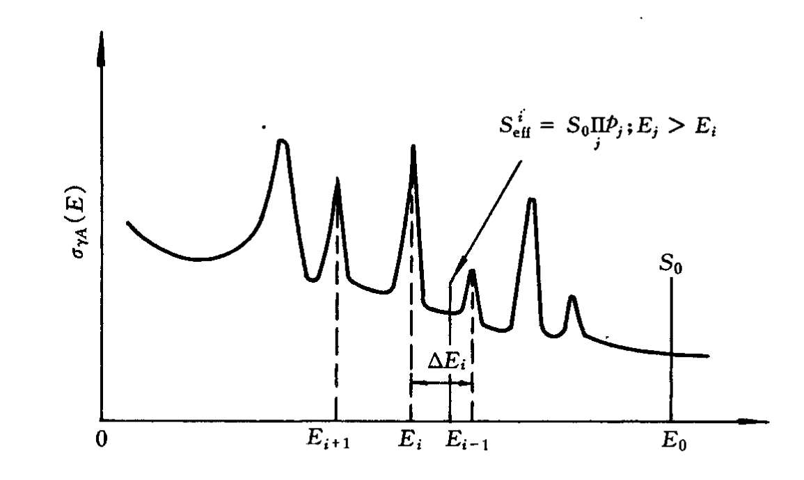
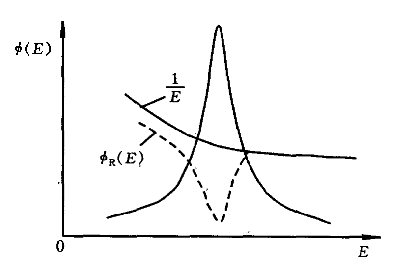

中子物理学
中子与原子核的作用
中子分类
反应堆核物理，实际上就是堆内中子的物理学。中子是组成原子核的粒子之一，其静止质量稍大于质子的静止质量。通常在工程上取中子的静止质量为1u, 中子不带电荷。
在反应堆物理分析中，中子一般按照能量分成三类：
- 热中子：能量小于1eV
- 中能中子：能量在1eV \(\sim\) 0.1MeV之间
- 快中子：能量大于0.1MeV
中子与原子核反应
概况的讲，堆内中子与原子核的相互作用方式有：势散射、直接相互作用和复合核的形成。
势散射： 本质为中子波与核表面势相互作用，中子既未进入靶核，靶核内能也未发生改变，势散射前后系统能动量守恒，属于弹性散射。
直接相互作用：直接相互作用是入射中子直接与靶核内某核子碰撞，使其从核里发射出来，而中子却留在了靶核内的核反应，这个过程需要高能中子才能直接与原子核发生相互作用。如果从靶核里发射出来的核子是质子，这就是直接相互作用的\((n, p)\)反应。如果从核里发射出来的核子是中子，同时靶核由激发态返回基态放出\(\gamma\)射线，就是直接的非弹性散射过程。实际反应堆中这样的高能中子数非常少，因此堆物理分析时这种直接相互作用方式是不重要的。
复合核的形成：复合核的形成分为两个阶段，首先中子被靶核\(_Z ^{A}X\)吸收，形成激发态的复合核\([ _{Z}^{A+1}X^*]\), 复合核可以在激发态停留一段时间，由于核内的无规律碰撞，激发能在核子间多次交换，使某个核子得到足以逸出系统的能量时，处于激发态的复合核放出一个粒子（或者一个光子）而衰变，并留下一个余核（或反冲核）。
- \((n, p)\)：\({}_Z^AX + {}_0^1n \to {}_{Z - 1}^AY + {}_1^1H\)，复合核放出一个质子而衰变，称为\((n, p)\)反应
- \((n, \alpha)\)：\({}_Z^AX + {}_0^1n \to {}_{Z - 2}^{A - 3}Y + {}_2^4He\)，复合核放出一个\(\alpha\)粒子而衰变，称为\((n, \alpha)\)反应
- \((n, n)\)：\({}_Z^AX + {}_0^1n \to {}_Z^AX + {}_0^1n\)，复合核放出一个中子，若余核\(_Z ^{A}X\)直接重新回到基态，则这个过程为共振弹性散射，称为\((n, n)\)反应
- \((n, n')\)：\({}_Z^AX + {}_0^1n \to {}_Z^AX + {}_0^1n + \gamma\)，复合核放出一个中子，若余核\(_Z ^{A}X\)仍处于激发态，通过放出\(\gamma\)射线回到基态，则这个过程为共振非弹性散射，称为\((n, n')\)反应
- \((n, \gamma)\)：\({}_Z^AX + {}_0^1n \to {}_Z^{A + 1}X + \gamma\)，复合核放出\(\gamma\)射线而衰变，这个过程为辐射俘获称为\((n, \gamma)\)反应
- \((n, f)\)：\({}_Z^AX + {}_0^1n \to {}_{ {Z_1} }^{ {A_1} }Y + {}_{ {Z_2} }^{ {A_2} }W + \nu {}_0^1n\)，复合核通过分裂成两个较轻的核而衰变，这个过程为核裂变称为\((n, f)\)反应
综上所述，我们可以根据中子和靶核的作用结果的不同，将中子与原子核的作用分为两类：
- 散射：包括弹性散射（共振弹性散射和势散射）和非弹性散射（共振非弹性散射）
- 吸收：包括辐射俘获、核裂变、\((n, p)\)和\((n, \alpha)\)反应等
反应堆内的中子散射
- 弹性散射：分为共振弹性散射和势散射，热中子反应堆中对中子从高能慢化到低能过程起主要作用的是弹性散射
- 非弹性散射：非弹性散射的发生要求入射中子的动能必须高于靶核的第一激发态能量，因此非弹性散射具有阈能的特点。
对于轻核来说，他的激发态能量在MeV数量级，即使对于\(^{235}{\rm U}\)这样的重核，中子也必须具有45keV以上的能量才能与之发生非弹性散射。在快中子反应堆中，非弹性散射过程才是重要的。对于热中子反应堆而言，裂变中子的能量在MeV的范围内，因此在高能中子区，仍然会有非弹性散射发生，但是一但中子的能量降到非弹性散射阈能以下后，便主要依靠弹性散射过程来慢化中子了
中子的吸收
辐射俘获
辐射俘获\((n, \gamma)\)可以在全能区内发生，对于低能中子而言，其与中等质量核和重核作用时易于发生这种反应。反应堆内重要的俘获反应为 \[ {}_{92}^{238}{\rm U} + {}_0^1n \to {}_{92}^{239}{\rm U} + \gamma \] \({}_{92}^{238}{\rm U}\)吸收中子后变为\({}_{92}^{239}{\rm U}\), \({} _{92}^{239}{\rm U}\)经过两次\(\beta^{-}\)衰变后可转变为\({}^{239}{\rm Pu}\)，\({}^{239}{\rm Pu}\)是一种人工易裂变材料，在自然界里是不存在的，因此这一过程对于核燃料的转换与增值具有重要意义。
辐射俘获中，原先稳定的原子核俘获一个中子后往往会转变为具有放射性的原子核，因此辐射俘获会产生放射性。
\((n, p)、(n, \alpha)\)反应
反应堆运行过程，堆内冷却剂和慢化剂经过高能中子照射后，会发生\((n, p)\)核反应： \[ _8^{16}{\rm O} + _0^1{\rm n} \to _7^{16}{}{\rm N} + {}_1^1{\rm H} \] 热中子也会和\(^{10}{\rm B}\)发生\((n, \alpha)\)吸收反应： \[ _5^{10}{\rm B} + _0^1{\rm n} \to _3^7{\rm Li} + {}_2^4{\rm He} \] 上面的反应经常用来探测堆内热中子，并且\(_5^{10}{\rm B}\)也广泛用作热中子反应堆的反应性控制材料。
核裂变
易裂变同位素：
在各种能量中子作用下均可发生裂变，并且在低能中子作用下发生裂变法可能性较大的核素，称为易裂变同位素，常见的有：\({}^{233}{\rm U}\)、\({}^{235}{\rm U}\)、\({}^{239}{\rm Pu}\)、\({}^{241}{\rm Pu}\)
可裂变同位素：
在能量高于某一阈值的中子作用下才能发生裂变的核素，称为可裂变同位素，常见的有：\({}^{232}{\rm Th}\)、\({}^{238}{\rm U}\)、\({}^{240}{\rm Pu}\)
中子截面与中子能谱
中子能谱
中子数关于能量的分布称为中子能谱分布，反应堆中总的中子通量密度为： \[ \Phi = \int_0^\infty {n\left( E \right)v\left( E \right)dE} = \int_0^\infty {\phi \left( E \right)dE} \] 我们关注中子能谱分布，实际上关注的就是\(\phi \left( E \right)\)的分布
中子截面
核反应截面的数值取决于入射中子的能量和靶核的性质，对于多数元素，反应截面随入射中子能量\(E\)的变化特性包含三个区域：
- 低能区：\(E \le 1eV\)
- 共振区（中能区）：\(1eV < E \le {10^5}eV\)，特别是\(1 \sim {10^3}eV\)区域，许多重核元素截面会出现许多共振峰。
- 快中子区：\(E > {10^5}eV\)
微观吸收截面
低能区核素微观吸收截面 \(\sigma_{a}\) 按照 \(1/\sqrt{E}\) 规律变化，即 \(\sigma_{a}(E) \sqrt{E} = {\rm Const}\)，一般可以通过如下式子计算中子的微观吸收截面
\[ {\sigma _a}\left( E \right) = {\sigma _a}\left( {0.0235} \right)\sqrt {\frac{ {0.0235} }{E} } \]
\(0.0253 {\rm eV}\) 为温度为 \(297 {\rm K}\) 时的热中子能量，一般核工程手册中以此为换算基准能量。
对于轻核来讲，由于其第一激发态能量较高，因此在中子能量在几个 \({\rm keV}\) 到 \({\rm MeV}\) 区间内，其吸收截面都近似按照 \(1/v\) 律变化，只有对能量比较高的中子(一般在 \({\rm MeV}\) 范围内)才会出现共振吸收，且轻核的共振峰宽而低。
对于重核和中等质量核，其在中能区共振吸收的影响，吸收截面会偏移 \(1/v\) 律，高能区其共振峰开始重叠以致不能分辨。
微观散射截面
非弹性散射截面 \(\sigma_{in}\)
非弹性散射截面有阈能的特点，质量数越大，阈能越低。中子能量小于阈能时，\(\sigma_{in} = 0\)
弹性散射截面 \(\sigma_{s}\)
多数元素与较低能量中子的散射都是弹性的，\(\sigma_{s}\) 基本为常数，一般为几 \({\rm b}\) 。对于轻核、中等核，中子能量从低能区一直到 \({\rm MeV}\) 范围内，\(\sigma_{s}\) 近似为常数。
对于重核来讲，其在共振能区还有共振弹性散射出现。
微观裂变截面 \(\sigma_{f}\)
对于易裂变核素的裂变截面
- 热能区：裂变截面值很大，且随中子能量的减小儿增加
- 共振区：裂变截面出现共振峰，共振能区延伸到几个 \({\rm keV}\)
- 高能区：在 \({\rm keV}\) 到 \({\rm MeV}\) 能量范围内，裂变截面随中子能量的增加而下降到几\({\rm b}\)
根据上述对截面的分析，可以得到各截面之间的关系为
\[ \begin{array}{l} {\sigma _s} = {\sigma _e} + {\sigma _{in}}\\ {\sigma _a} = {\sigma _\gamma } + {\sigma _f} + {\sigma _{n,\alpha }} + {\sigma _{n,p}} + \cdots \\ {\sigma _t} = {\sigma _s} + {\sigma _a} \end{array} \]
热中子反应堆内中子循环
中子循环的五个过程为
\(^{238} {\rm U}\) 的快中子增殖：设初始一代有n个中子，在初始裂变中子中，约有 \(60\%\) 的中子能量在 \(^{238} {\rm U}\) 裂变阈能(约 $ {}$ )以上，这部分中子与 \(^{238} {\rm U}\) 作用时能够引起 \(^{238} {\rm U}\) 裂变而产生快中子，称为 \(^{238} {\rm U}\) 的快中子增殖效应，定义快中子增殖因数 \(\varepsilon\) 为由初始裂变中子所得到的慢化到 \(^{238} {\rm U}\) 裂变阈能以下的平均中子数，则快中子增殖使中子增长至 \(n \varepsilon\) 个。
慢化过程的共振吸收：由于共振区共振吸收的影响，只有一部分快中子能够慢化到热中子，记逃脱共振俘获概率为 \(p\)，则共振俘获后还剩 \(n p \varepsilon\) 个慢化到裂变阈能以下。
慢化剂一级结构材料等物质的辐射俘获：热中子部分被燃料吸收，部分被其他物质所吸收，记热中子利用系数为 \(f\) 表征被燃料吸收的热中子数与热中子总数的比值。
燃料吸收热中子引起裂变：定义 \(\eta\) 为核燃料每吸收一个热中子所产生的平均裂变中子数，设每次裂变所产生的平均中子数为 \(\nu\)，则有
\[ \eta = \frac{ { {\Sigma _f} } } { { {\Sigma _a} } }\nu \]
- 中子的泄露：包括慢化过程中的泄露和热中子扩散过程中的泄露，定义不泄露概率为\(\Lambda\)，则有
\[ \Lambda = {\Lambda _s} {\Lambda _d} \]
最终得到下一代的中子总数为 \(n\varepsilon pf\eta {\Lambda _s}{\Lambda _d}\)，根据有效增殖因数定义
\[ {k_{eff} } = \frac{ {n\varepsilon pf\eta {\Lambda _s}{\Lambda _d} } } {n} = {k_\infty }\Lambda \]
其中 \({k_\infty } = \varepsilon pf\eta\) 称为四因子公式
中子慢化理论
反应堆内裂变中子具有相当高的能量，其平均值约为2 MeV。这些中子在系统中与原子核发生连续的弹性和非弹性碰撞，使其能量逐渐地降低到引起下一次裂变的平均能量。对于快中子反应堆这一平均能量一般在(0.1 MeV)左右或更高，而对于热中子反应堆，绝大多数裂变中子被慢化到热能区。中子由于散射碰撞而降低速度的过程叫做慢化过程。
中子的弹性散射过程

实验室坐标系L下中子与核子的碰撞是各项异性的，质心系C中是各向同性的。所以我们在C系中进行研究。
设靶核静止，则在碰撞前质心系中中子和靶核的速度为：
\[ \begin{array}{l} v_c = v_1 - V_{CM} = \frac{A}{A+1} v_1 \\ V_c = -V_{CM} = - \frac{1}{A+1} v_1 \end{array} \]
在质心系里看，碰撞前后中子和靶核的速度大小不变，只是运动的方向发生了变化。
\[ \begin{array}{l} v_c' = v_1 - V_{CM} = -\frac{A}{A+1} v_1 \\ V_c' = -V_{CM} = \frac{1}{A+1} v_1 \end{array} \]

换回到实验室坐标系L下，得到碰后中子的速度为
\[ v_1'^2 = V_{CM}^2 + v_c'^2 + 2 v_c' V_{CM} {\rm cos} \theta_c = \frac{v_1^2 (A^2 + 2A {\rm cos} \theta_c + 1) }{ (A+1)^2 } \]
因此经过一次碰撞前后，中子的能量之比为
\[ \frac{E'}{E} = \frac{v_1'^2 }{v_1^2} = \frac{(A^2 + 2A {\rm cos} \theta_c + 1) }{ (A+1)^2 } \]
引入参数 $ = ()^2$，碰后能量可以写为
\[ E' = \frac{1}{2} [(1+\alpha) - (1-\alpha){\rm cos} \theta_c]E \]
\(\theta = 0^ {\circ}\)时, \(E' \rightarrow E'_{\rm max} = E\)，碰撞前后中子能量不变
\(\theta = 180^ {\circ}\)时, \(E' \rightarrow E'_{\rm min} = \alpha E\)
因此经过一次碰撞后中子所处的能量区间为 \([\alpha E, E]\)，一次碰撞的最大能量损失为\(\Delta E_{\rm max} = (1 - \alpha) E\)，为了慢化速度加快，则应使 \(A\) 尽量小，所以应该选择轻核元素作为慢化剂。
根据散射角之间的关系，有
\[ v'_1 {\rm cos} \theta_l = V_{CM} + v'_c {\rm cos} \theta_c \]
联立消去 \(\theta_c\) 可得实验室坐标下散射角余弦与碰撞前后能量的关系
\[ {\rm cos} \theta_l = \frac{1}{2} [(A+1) \sqrt{\frac{E'}{E} } - (A-1) \sqrt{\frac{E}{E'}}] \]
散射后中子的能量分布
根据碰撞后中子散射角分布的概率可以求得碰撞后中子能量 \(E'\) 的分布，定义 \(f(E \rightarrow E')\) 为散射函数， \(f(E \rightarrow E') dE'\) 表示碰撞前中子能量为 \(E\)，碰撞后中子能量在 \(E'\) 附近 \(dE'\) 的概率，当入射能量 \(E\) 小于几 MeV 时，质心系内中子的散射是各向同性的，因此
\[ f(\theta_c) d\theta_c = \frac{d \Omega_c}{4 \pi} = \frac{1}{2} {\rm sin}\theta_c d\theta_c \]
进而可以得到散射函数为
\[ f(E \rightarrow E') dE' = -\frac{d E'}{(1 - \alpha) E} \quad \quad \alpha E \leq E' \leq E \]
这表明散射后的能量是均匀分布的，并且与碰撞后的能量 \(E'\) 大小无关。
平均对数能降
由于中子能量分布范围广，反应堆物理中常用对数能降 \(u\) 来描述能量变化，取裂变中子平局能量 \(E_0 = 2 {\rm MeV}\) 为参考能量，对数能降定义为
\[ u = \ln \frac{ { {E_0}} } { {E} } \]
一次碰撞后对数能量的增量为
\[ \Delta u = u' - u = \ln \frac{ { {E_0}} } { {E'} } - \ln \frac{ { {E_0}} } { {E} } = \ln \frac{ { {E}} } { {E'} } \]
描述中子慢化过程时，通常采用平均对数能降 \(\xi\)
\[ \xi = \overline {\ln E - \ln E'} = \int_E^{\alpha E} {\left( {\ln E - \ln E'} \right)f\left( {E \to E'} \right)dE'} = \int_E^{\alpha E} {\ln \frac{E}{ {E'} }\frac{ {dE'} }{ {\left( {1 - \alpha } \right)E}}} \]
积分后得
\[ \xi = 1 + \frac{\alpha }{ {1 - \alpha } }\ln \alpha = 1 - \frac{ { { {\left( {A - 1} \right)}^2} } } { {2A} }\ln \left( {\frac{ {A + 1}} { {A - 1}} } \right) \]
\(A > 10\) 时，平均对数能降可近似为
\[ \xi \approx \frac{2}{ {A + \frac{2}{3}}} \]
因此当质心系中的散射为各向同性时，平均对数能降 \(\xi\) 只与靶核质量数 \(A\) 有关，而与中子的能量无关。
平均散射角余弦
在L实验室坐标系中，每次碰撞的平均散射角余弦值为
\[ \overline { {\mu _l}} = \int_0^\pi {\cos {\theta _l}f\left( { {\theta _l}} \right)d{\theta _l}} = \frac{1}{2}\int_0^\pi {\frac{ {A\cos {\theta _c} + 1}}{ {\sqrt { {A^2} + 2A\cos {\theta _c} + 1} }}} \sin {\theta _c}d{\theta _c} = \frac{2}{ {3A}} \]
因此L系中散射各相异性，中子沿原来方向运动的概率较大；靶核质量愈小，散射各相异性概率愈大。 \(A \rightarrow 0\) 时，\({\mu _l \rightarrow 0}\), 系统质心移动到靶核上，L系散射各向同性。
慢化剂选择
慢化剂的选择要考虑以下因素：
- 大的宏观散射截面 \(\Sigma_s\)
- 较大的对数能降 \(\xi\)
- 较大的慢化比 \(\xi \Sigma_s / \Sigma_a\)
反应堆常用的慢化剂有：
- 重水，慢化比最大，但是价格昂贵，可以直接用天然铀做核燃料；
- 轻水，慢化能力大，慢化比小，但是价格低廉，需要用浓缩铀；
- 石墨，慢化比较大，慢化能力小，需要有庞大的堆芯体积。
中子平均寿命
快中子自裂变产生到慢化成热中子，直至最后被俘获所需的平均时间，称为中的的平均寿命 \(l\)
对于热中子反应堆，中子平均寿命主要由扩散时间决定。对于压水堆，中子平均寿命 \(l \approx 10^{-4} {\rm s}\)，对于快中子反应堆，中子平均寿命 \(l \approx 10^{-7} {\rm s}\).
\[ l = t_s + t_d \]
其中 \(t_s\) 为慢化时间, \(t_d\) 为扩散时间
慢化时间
\(dt\) 时间间隔内中子与原子核发生弹性散射碰撞次数为 \(n = v dt / \lambda_s (E)\), 产生的平均对数能降为
\[ du = -\frac{dE}{E} = \frac{\xi v} dt \]
其中 \({\lambda_s (E)}\) 是能量为 \(E\) 的中子的散射平均自由程, 可以得到中子从 \(E_0\) 慢化到 \(E_{th}\) 所用的时间\(t_s\)为
\[ t_s = - \int_{ {E_0}}^{ {E_{th}}} {\frac{ { {\lambda _s}\left( E \right)}}{ {\xi v}}} \frac{ {dE}}{E} \approx \sqrt 2 \frac{ { { {\bar \lambda }_s}}}{\xi }\left[ {\frac{1}{ {\sqrt { {E_{th}}} }} - \frac{1}{ {\sqrt { {E_0}} }}} \right] \]
扩散时间
快中子慢化成热中子后，在被俘获前还会在介质中扩散一段时间 \(t_d\), 以 \(\lambda_a (E)\) 表示中子的吸收平均自由程，则热中子的平均寿命为
\[ {t_d}\left( E \right) = \frac{ { {\lambda _a}\left( E \right)}}{v} = \frac{1}{ { {\Sigma _a}\left( E \right)v}} \]
对于吸收截面满足 \(1/v\) 律的介质，有 \({\Sigma _{a 0}}\left( E \right) v_0\)，扩散时间可以写为
\[ t_d (E) = \frac{1}{ { {\Sigma _{a0}}\left( E \right)v_0}} \]
其中 \({\Sigma _{a 0}}\) 是 \(v_0 = 2200 {\rm m / s}\) 的热中子宏观吸收截面。
中子慢化能谱
中子慢化方程的建立
在描述中子慢化过程时，通常采用慢化密度 \(q({\bf r}, E)\) 这个物理量，它表示在 \({\bf r}\) 处单位体积内每秒慢化到能量 \(E\) 以下的中子数。
在 \({\bf r}\) 处能量为 \(E'\) 的中子单位体积内每秒慢化到 \(E\) 以下的中子数为
\[ \int_E^0 { {\Sigma _s}\left( { {\bf r},E'} \right)f\left( {E' \to E} \right)\phi \left( { {\bf r},E'} \right)dE} \]
根据定义慢化密度为 \(E > E'\) 的所有能量的中子慢化到 \(E\) 以下的数目总和，因此有
\[ q\left( { {\bf r},E} \right) = \int_E^\infty {dE'\int_E^0 { {\Sigma _s}\left( { {\bf r},E'} \right)f\left( {E' \to E} \right)\phi \left( { {\bf r},E'} \right)dE} } \]
在弹性散射的条件下，方程化简为
\[ \begin{array}{l} \begin{aligned} q\left( { {\bf r},E} \right) & = \int_E^{E/\alpha } {dE'\int_{\alpha E'}^E {\frac{ { {\Sigma _s}\left( { {\bf r},E'} \right)\phi \left( { {\bf r},E'} \right)}} { {\left( {1 - \alpha } \right)E'}}dE} } \\ & = \int_E^{E/\alpha } { {\Sigma _s}\left( { {\bf r},E'} \right)\phi \left( { {\bf r},E'} \right)\frac{ {E - \alpha E'}} { {\left( {1 - \alpha } \right)E'}}dE'} \end{aligned} \end{array} \]
对于无限均匀介质，中子通量密度与空间坐标\({\bf r}\) 无关，只能能量 \(E\) 的函数。现考虑能量在 \(E \sim E + dE\)
能量间隔内的中子平衡：
进入 \(E \sim E + dE\)
的中子可以分为两部分：
- 由裂变中子源产生的直接处于该能量间隔内的中子 \(S(E) dE\)
- 由于中子与介质原子核散射进入该能量间隔的中子，即由 \(E' > E\) 的能区散射到 \(E \sim E + dE\) 能区内的中子 \(dE\int_\infty ^E { {\Sigma _s}\left( {E'} \right)f\left( {E' \to E} \right)\phi \left( {E'} \right)dE'}\)
离开该能区的中子数为从该能区散射出去和被吸收的中子数 \(\Sigma_t (E) \phi (E) dE\).
根据中子平衡的稳态条件，进入该能区的中子数等于离开该能区的中子数，得到稳态无限介质内的中子慢化方程为
\[ {\Sigma _t}\left( E \right)\phi \left( E \right) = \int_\infty ^E { {\Sigma _s}\left( {E'} \right)f\left( {E' \to E} \right)\phi \left( {E'} \right)dE'} + S\left( E \right) \]
慢化方程的解即为所要求的中子慢化能谱。
多数情况下，慢化方程式是无法求出解析解的，针对几种特定情况讨论一下慢化方程的解。
无吸收单核素无限介质
对于只含有一种核素的无吸收性介质,中子源 \(S(E_0)\) 为均匀分布，着重讨论慢化区，此能量区间不存在由裂变反应直接产生的裂变中子源，中子慢化方程写为
\[ {\Sigma _s}\left( E \right)\phi \left( E \right) = \int_E^{E/\alpha } { \frac{ {\Sigma _s}\left( {E'} \right)\phi \left( {E'} \right)} { {\left( {1 - \alpha } \right)E'}}dE'} \]
它的渐进解形式为 \(\phi (E) = \frac{C} {E}\)，代入慢化密度表达式得
\[ \begin{array}{l} \begin{aligned} q(E) & = \frac{C}{1 - \alpha} \int_E^{E/\alpha } {\frac{\Sigma _s (E - \alpha E')} {E'^2} dE'} \\ & = C \Sigma_s (1 + \frac{\alpha}{1 - \alpha} \ln \alpha) \\ & = C \Sigma_s \xi \end{aligned} \end{array} \]
得到中子慢化能谱为 \(\phi (E) = \frac{q(E)} {\xi \Sigma_s E}\)，在无吸收稳态条件下慢化密度就是源强度, \(q(E) = S_0\), 最终得到中子能谱为
\[ \phi (E) = \frac{S_0} {\xi \Sigma_s E} \]
这种形式的能谱称为 \(1/E\) 谱或费米谱。
无吸收混合物无限介质情况
对于混合物体系，其宏观散射截面 \(\Sigma_s(E) = \sum_{i} N_i \sigma_{si}\), 对应漫化方程写为
\[ {\Sigma _t}\left( E \right)\phi \left( E \right) = \int_E ^{E_0} \frac{N_i \sigma_{si} \phi(E')} {(1 - \alpha_i) E'} dE' \]
得到中子能谱的解为
\[ \phi (E) = \frac{1} {\sum_{i} {N_i \sigma_{si} \xi_i}} \frac{q(E)} {E} \]
定义混合物的平均对数能降为 \(\bar \xi = \frac {\sum_{i} {N_i \sigma_{si} \xi_i}} {\sum_{i} {N_i \sigma_{si}}}\)，得到中子慢化能谱为
\[ \phi (E) = \frac{q(E)} {\bar \xi \Sigma_s E} \]
无限介质弱吸收情况
无限介质弱吸收情况，认为宏观吸收截面比宏观散射截面小很多，在 \(E - dE\) 的间隔中，慢化密度由于被中子被吸收减小了 \(dq\)，它应该等于在 \(dE\) 内被吸收的中子数，在目前所讨论的弱吸收 \(\Sigma_a \ll \Sigma_s\) 情况下，近似地可以认为 \(\phi(E)\) 基本上和无吸收时情况相同，因此有
\[ dq = - \Sigma_a \phi(E) dE = - \Sigma_a \frac{q(E)} {\bar \xi \Sigma_s} \frac{dE}{E} \]
将上式对 \(E\) 到 \(E_0\) 积分，同时注意到 \(q(E_0) = S_0\)，因而有
\[ q(E) = S_0 \exp (- \int_E^{E_0} {\frac{\Sigma_a } {\bar \xi \Sigma_s} \frac{dE'}{E'}}) \]
根据逃脱共振俘获概率 \(p(E)\) 的定义，有
\[ p(E) = \frac{q(E)}{S_0} = \exp [- \int_E^{E_0} {\frac{\Sigma_a (E) } {\bar \xi \Sigma_s} \frac{dE'}{E'}}] \]
慢化过程的共振吸收
中子能量慢化到 \(0.1 {\rm MeV}\) 后，许多核素截面会在中能区产生共振峰，使得部分中子在慢化过程中被共振吸收，下面讨论具有强吸收共振峰的均匀介质情形。

有效共振积分
由慢化剂和吸收剂组成的无限均匀介质，介质内存在均匀分布的中子源，源强为 \(S_0\)，放出能量为 \(E_0\) 的中子。共振峰间距足够大以至于前一个共振峰对后一个共振峰的影响可以忽略不计。近似认为到达共振峰 \(i\) 的中子能谱为费米谱的形式，并对中子通量密度进行归一化，如认为源强 \(S_0 = \xi \Sigma_s\)
\[ \phi (E) = \frac{S_0}{\xi \Sigma_s E} \sim \frac{1}{E} \]
此时共振峰的吸收反应率为 \[ R = N_A \int_{\Delta E_i} {\sigma_a (E) \phi (E) dE} \] 其中 \(\phi (E)\) 为共振峰 \(i\) 内的中子通量密度分布，而在共振峰前的中子通量密度为 \(\phi (E) = 1/E\)，定义共振峰 \(i\) 的有效共振积分
\[ I_i = \int_{\Delta E_i} {\sigma_a (E) \phi (E) dE} \] 进而得到中子通过共振峰 \(i\) 的被吸收概率为 \(N_A I_i / \xi \Sigma_s\)，进而可以计算逃脱共振俘获概率
\[ p_i = 1 - \frac{N_A I_i} {\xi \Sigma_s} \approx \exp[- \frac{N_A}{\xi \Sigma_s} I_i] \]
裂变中子从初始能量 \(E_0\) 慢化至热中子能量 \(E_th\) 的过程中需要通过共振区的所有共振峰，因此热中子反应堆中逃脱共振俘获概率 \(p\) 为
\[ p = \prod\limits_i { {p_i}} = \exp \left[ { - \frac{ { {N_A}}}{ {\xi {\Sigma _s}}}\sum\limits_i { I_i}} \right] = \exp \left[ { - \frac{ { {N_A}}}{ {\xi {\Sigma _s}}}I} \right] \] 其中 \(I\) 为整个共振区的有效共振积分，表征共振峰对中子的吸收 \[ I = \sum\limits_i { I_i} = \int_{\Delta E} {\sigma_a (E) \phi (E) dE} \]
有效共振积分计算
要求出有效共振积分首先要根据慢化方程求出共振峰内的中子通量密度 \(\phi (E)\)，考虑无吸收慢化剂 \(M\) 和吸收剂 \(A\) 无限均匀介质，根据中子慢化方程
\[ \Sigma_t (E) \phi(E) = \int_{E}^{E/ \alpha_M} {\frac {\Sigma_{s, M} \phi(E')}{(1 - \alpha_M) E'} dE'} + \int_{E}^{E/ \alpha_A} {\frac {\Sigma_{s, A} (E') \phi(E')}{(1 - \alpha_A) E'} dE'} \] 其中 \(\Sigma_t (E) = \Sigma_{s, M} + \Sigma_{\gamma, A} (E) + \Sigma_{s, A} (E)\)，由于吸收剂 \(A\) 的散射截面 \(\Sigma_{s, A} (E)\) 除了势散射截面 \(\sigma_{p, A}\) 外，还包括共振散射截面，因此它是能量的函数。
窄共振(NR)近似
- \(\overline {\Delta {E_M}} \gg {\Gamma _p}, \overline {\Delta {E_A}} \gg {\Gamma _p}\)
NR近似下中子通量密度为 \[ {\phi _{NR}}\left( E \right) = \frac{ { {\Sigma _{s,M}} + {\Sigma _{p,A}}}}{ { {\Sigma _t}\left( E \right)E}} \]
有效共振积分 \[ {I_{NR,i}} = \int_{\Delta {E_i}} { {\sigma _{\gamma ,A}}\left( E \right)\frac{ { {\Sigma _{s,M}} + {\Sigma _{p,A}}}}{ { {\Sigma _t}\left( E \right)}}\frac{ {dE}}{E}} \]
窄共振无限质量(NRIM)近似
- \(\overline {\Delta {E_M}} \gg {\Gamma _p}, \overline {\Delta {E_A}} \ll {\Gamma _p}\)
NRIM近似下中子通量密度为 \[ {\phi _{NRIM}}\left( E \right) = \frac{ { {\Sigma _{s,M}}}}{ {\left[ { {\Sigma _{s,M}} + {\Sigma _{\gamma ,A}}\left( E \right)} \right]E}} \]
有效共振积分 \[ {I_{NRIM,i}} = \int_{\Delta {E_i}} { {\sigma _{\gamma ,A}}\left( E \right)\frac{ { {\Sigma _{s,M}}}}{ { {\Sigma _{s,M}} + {\Sigma _{\gamma ,A}}\left( E \right)}}\frac{ {dE}}{E}} \]
中子通量密度和有效共振积分通式为
\[ \begin{array}{l} \begin{aligned} {\phi _R}\left( E \right) = \frac{ { {\Sigma _{s,M}} + \lambda {\Sigma _{p,A}}}}{ {\left( { {\Sigma _{\gamma ,A}} + \lambda {\Sigma _{s,A}} + {\Sigma _{s,M}}} \right)E}}\\ {I_i} = \int_{\Delta {E_i}} { {\sigma _{\gamma ,A}}\left( E \right)\frac{ { {\Sigma _{s,M}} + \lambda {\Sigma _{p,A}}}}{ { {\Sigma _{\gamma ,A}} + \lambda {\Sigma _{s,A}} + {\Sigma _{s,M}}}}\frac{ {dE}}{E}} \end{aligned} \end{array} \] 其中 \(\lambda=1\) 对应NR近似，\(\lambda=0\) 对应NRIM共振近似。
能量自屏效应

由于热中子在进入共振中心区域之前会被逐渐吸收，导致到达中心时的中子注量率明显低于燃料棒表面的中子注量率。在共振峰附近能量的中子尤其容易被自屏掉，因为共振截面通常很大。这种局部地方的中子注量率明显低于周围的现象，就被称为自屏效应。
热中子能谱
热中子是指中子与所在的介质的原子或分子处于热平衡状态的中子。反应堆物理中通常把某个分解能量 \(E_c\) 以下的中子称为热中子， \(E_c\) 称为分界能或缝合能，对于压水堆通常取 \(E_c = 0.625 {\rm eV}\).
热中子能谱的“硬化”
- 在反应堆中，所有的热中子都是从高能慢化而来，然后与介质达到热平衡，因此较高能区的中子数就较多。
- 由于介质也要吸收中子，因此必然有一部分中子尚未来得及和周围介质达到热平衡就被介质吸收了。因此低能量的地方，吸收概率要大一些，其结果又造成了能量较低部分的中子份额减少，高能中子的份额较大。
热中子的平均能量和最概然能量都要比介质原子核的平均能量和最概然能量高，这一现象称为热中子能谱的硬化
硬化的结果相当于把介质的麦克斯韦分布谱向右移动，使 \(T_m\) 增大到 \(T_n\)。 \(T_n\) 称为中子温度，中子温度的数值一般要比介质温度高，这个差值与介质的慢化能力相关，近似有以下关系
\[ T_n = T_M (1 + C \frac{\Sigma_a (k T_M)}{\xi \Sigma_s}) \] 对于铀-水栅格，通常取 \(C=1.4\)，如果栅元或介质内的各元素吸收截面服从 \(1/v\) 定律，则
\[ \Sigma_a (k T_M) = \Sigma_a (0.0253) \sqrt{\frac{293}{T_M}} \]
通过分析，可以得到热中子反应堆内的能谱分布
- 高能区（能量大于0.1 MeV）,中子能谱近似地可以用裂变中子谱来描述。
- 在慢化区，中子能量密度的能谱近似按照 \(1/E\) 规律变化。
- 在热能区，中子能谱可用麦克斯韦谱近似(\(T_M\) 换成 \(T_n\))。
热中子的平均截面
实际计算中通常把热能区的中子视为一群中子，因此需要求出平均截面
\[ \sigma = \frac{ {\int_0^{E_c} {\sigma \left( E \right)N\left( E \right)vdE} }} { \int_0^{E_c} {N\left( E \right)vdE} } \] 计算可以得到
\[ { {\bar \sigma }_a} = \frac{ {\sqrt \pi }}{2}\sqrt {\frac{ {0.0253}}{ {k{T_n}}}} {\sigma _a}\left( {0.0253} \right) \]
中子扩散理论
由于中子与原子核间的无规则碰撞，中子在介质内的运动是一种杂乱无章的具有统计性质的运动，即初始在堆内某一位置具有某种能量及某一运动方向的中子，在稍晚些时候，将运动到堆内的另一位置以另一能量和另一运动方向出现。这一现象称为中子在介质内的输运过程。为了对中子输运过程进行研究，首先必须建立描述中子在介质输运过程或中子角密度分布 \(n ({\bf r}, E, {\bf \Omega})\) 所满足的基本方程式，然描述中子输运过程的精确方程叫做玻尔兹曼输运方程。即使 是稳态情况，中子输运方程也是一个含有空间位置 \((x, y, z)\)，能量 \(E\) 和运动方向 \((\theta, \varphi)\) 等6个自变量的偏微分-积分方程。
如果中子通量密度的角分布是接近于各向同性的，例如在大型反应堆堆芯的中心部分，那么，可以近似地认为中子通量密度的角分布与运动方向 \({\bf \Omega}\) 的依赖性很弱甚至无关，这使同题大大简化。通过这种近似简化得到的方程称为扩散方程。
单能中子扩散方程
在分子扩散现象中分子扩散是由于分子间的相互碰撞引起的，而在热中子反应堆内中子密度约为 \(10^{16} m^{-3}\) 数量级，比起介质的原子核密度 (\(10^{28} m^{-3}\) ) 要小得多。因此反应堆内中子之间的相互碰撞可以略去不计，其扩散主要是中子与介质原子核散射碰撞的结果。在中子密度大的地方，中子与原子核碰撞的次数就越多，而每次碰撞以后，中子通常要改变运动方向离开碰撞中心因此与分子的扩散相似，中子总是从中子密度高的地方向密度低的地方扩散。
Fick定律
中子的扩散和气体分子的扩散很相似，它们都从浓度高的区域向浓度底的区域扩散，扩散的速率与粒子的密度的变化梯度成正比，既都服从“斐克扩散定律”。
\[ J = -D \nabla \phi \]
假设
- 介质是无限的、均匀的：只有均匀，散射截面才是常数，才能提到积分号外面；只有无限，才能做无穷积分。
- 在实验室坐标系中散射是各向同性的：落在单位立体角内的概率为 \(1/4 \pi\)
- 介质的吸收截面很小即 \(\Sigma_a \ll \Sigma_s\) ：只考虑散射截面，会使积分计算方便
- 中子通量密度是随空间位置缓慢变化的函数：\(\phi(r)\) 才能写出表达式，做一阶泰勒展开
具体推导过程参见 中子扩散理论
在这个假设下，我们得到了中子的流密度如下：
- 每秒沿 \(z\)
轴负方向自上而下穿过单位面积的中子数：
\[ J_z^{-} = \frac{\phi_0}{4} + \frac{1}{6 \Sigma_s} (\frac{\partial \phi}{\partial z}) \] - 每秒沿 \(z\)
轴负方向自下而上穿过单位面积的中子数：
\[ J_z^{+} = \frac{\phi_0}{4} - \frac{1}{6 \Sigma_s} (\frac{\partial \phi}{\partial z}) \] - 单位时间内沿着 \(z\) 方向穿过单位面积的净中子数 \(J_z\) 为 \[ J_z = J_z^{+} - J_z^{-} = - \frac{\lambda_s}{3} \frac{\partial \phi ({\bf r})}{\partial z} \]
\(J_x\) 和 \(J_y\) 同理可得
\[ J_x = - \frac{\lambda_s}{3} \frac{\partial \phi ({\bf r})}{\partial x} \]
\[ J_y = - \frac{\lambda_s}{3} \frac{\partial \phi ({\bf r})}{\partial y} \]
最终得到中子流密度为 \[ {\bf J} = J_x \hat{i} + J_y \hat{j} + J_z \hat{k} = - \frac{\lambda_s}{3} \nabla \phi \]
斐克定律表示：中子流密度J正比于负的中子通量密度梯度， 其比例常数叫作扩散系数，并用 \(D\) 表示。推导过程中使用了在实验室坐标系中中子的散射是各向同性的假设，实际计算中应对散射的各向异性进行修正，必须用输运的平均自由程 \(\lambda_{tr}\) 代替散射平均自由程 \(\lambda_s\)，扩散系数 \(D\) 可写为
\[ \begin{array}{l} \begin{aligned} & D = \frac{\lambda_{tr}}{3} \\ & \lambda_{tr} = \frac{\lambda_s}{1 - \bar \mu_0} \\ & \mu_0 = \frac{2}{3A} \end{aligned} \end{array} \]
单能中子扩散方程建立
考虑一定体积V内的中子数守恒 \[ \frac{d}{dt} \int_{V} {n ({\bf r}, t) dV} = 产生率(S) - 泄露率(L) - 吸收率(A) \] 其中 \[ \begin{array}{l} \begin{aligned} & L = \int_{S}{ {\bf J}({\bf r}, t) \cdot {\bf n} dS} = \int_{V} {\nabla \cdot {\bf J} dV} = -\int_{V} {D \nabla^2 \phi}({\bf r}, t) dV \\ & S = \int_{V} {S(\bf r, t)} dV \\ & A = \int_{V} {\Sigma_{a} \phi ({\bf r}, t)} dV \end{aligned} \end{array} \]
得到单能中子的扩散方程为 \[ \frac{1}{v} \frac{\partial \phi ({\bf r}, t)}{partial t} = S ({\bf r}, t) + D \nabla^2 \phi ({\bf r}, t) - \Sigma_a \phi ({\bf r}, t) \]
稳态情况下单能中子的扩散方程为 \[ S ({\bf r}, t) + D \nabla^2 \phi ({\bf r}, t) - \Sigma_a \phi ({\bf r}, t) = 0 \]
扩散方程边界条件
- 在扩散方程适用的范围内，中子通量密度必须是正的、有限的实数
- 在两种不同扩散性质的介质交界面上，垂直于分界面的中子流密度相等，中子通量密度相等
- 介质与真空交界外表面上从真空返回介质的中子流等于零
假设从交界面处将中子通量密度的分布曲线按它在交界面处的斜率向真空作直线外推，则在离开交界面距离 \(d\) 处的位置上中子通量密度为零， 我们有 \(d = \frac{2}{3} \lambda_{th}\)，\(d\) 称为直线外推距离
Fick定律适用范围
- 在有限的介质内，在距离其表面几个自由程以外的全部区域斐克定律时成立的，而在距真空边界两三个自由程以内区域，它是不适用的。
- 中子通量密度必须缓慢变化或它的梯度变化不大。 在控制棒附近或两种扩散性质明显不同的介质交界面附近的几个平均自由程内，斐克定律不适用。此外，斐克定律只适用于弱吸收介质。
- 推导中并没有考虑中子源的贡献，中子流密度的贡献只是来自中子与介质 核的散射碰撞在距强中子源两三个平均自由程的区域内，斐克定律不适用。